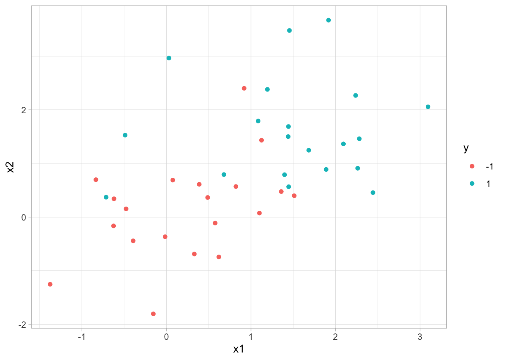
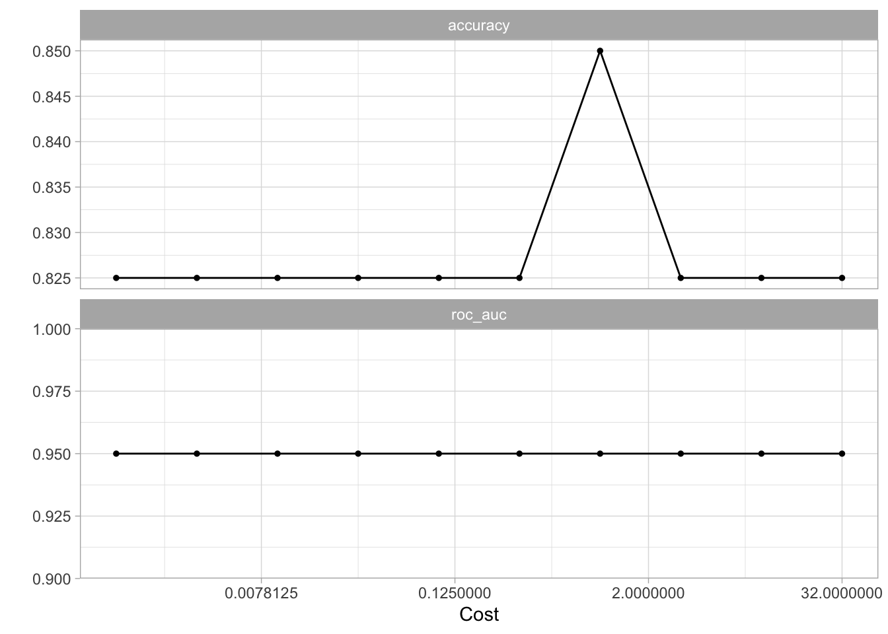
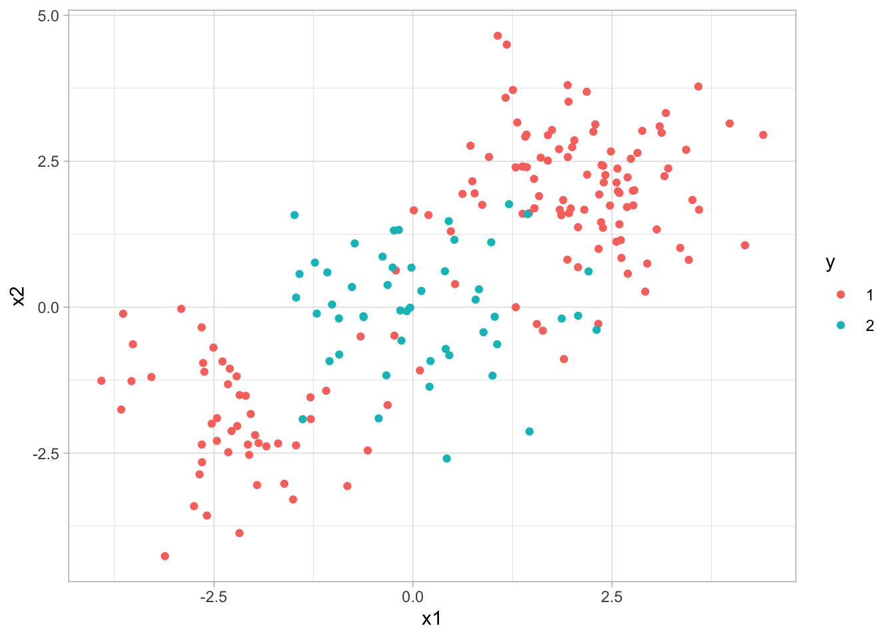

9 Support Vector Machines
This lab will take a look at support vector machines, in doing so we will explore how changing the hyperparameters can help improve performance. This chapter will use parsnip for model fitting and recipes and workflows to perform the transformations, and tune and dials to tune the hyperparameters of the model.
9.1 Support Vector Classifier
Let us start by creating a synthetic data set. We will use some normally distributed data with an added offset to create 2 separate classes.
Plotting it shows that we are having two slightly overlapping classes
ggplot(sim_data, aes(x1, x2, color = y)) +
geom_point()
We can then create a linear SVM specification by setting degree = 1 in a polynomial SVM model. We furthermore set scaled = FALSE in set_engine() to have the engine scale the data for us. Once we get to it later we can be performing this scaling in a recipe instead.
set_engine() can be used to pass in additional arguments directly to the underlying engine. In this case, I’m passing in scaled = FALSE to kernlab::ksvm() which is the engine function.
svm_linear_spec <- svm_poly(degree = 1) %>%
set_mode("classification") %>%
set_engine("kernlab", scaled = FALSE)Taking the specification, we can add a specific cost of 10 before fitting the model to the data. Using set_args() allows us to set the cost argument without modifying the model specification.
svm_linear_fit <- svm_linear_spec %>%
set_args(cost = 10) %>%
fit(y ~ ., data = sim_data)
svm_linear_fitparsnip model object
Support Vector Machine object of class "ksvm"
SV type: C-svc (classification)
parameter : cost C = 10
Polynomial kernel function.
Hyperparameters : degree = 1 scale = 1 offset = 1
Number of Support Vectors : 17
Objective Function Value : -152.0188
Training error : 0.125
Probability model included. The kernlab models can be visualized using the plot() function if you load the kernlab package.
what if we instead used a smaller value of the cost parameter?
svm_linear_fit <- svm_linear_spec %>%
set_args(cost = 0.1) %>%
fit(y ~ ., data = sim_data)
svm_linear_fitparsnip model object
Support Vector Machine object of class "ksvm"
SV type: C-svc (classification)
parameter : cost C = 0.1
Polynomial kernel function.
Hyperparameters : degree = 1 scale = 1 offset = 1
Number of Support Vectors : 25
Objective Function Value : -2.0376
Training error : 0.15
Probability model included. Now that a smaller value of the cost parameter is being used, we obtain a larger number of support vectors, because the margin is now wider.
Let us set up a tune_grid() section to find the value of cost that leads to the highest accuracy for the SVM model.
svm_linear_wf <- workflow() %>%
add_model(svm_linear_spec %>% set_args(cost = tune())) %>%
add_formula(y ~ .)
set.seed(1234)
sim_data_fold <- vfold_cv(sim_data, strata = y)
param_grid <- grid_regular(cost(), levels = 10)
tune_res <- tune_grid(
svm_linear_wf,
resamples = sim_data_fold,
grid = param_grid
)
autoplot(tune_res)
using the tune_res object and select_best() function allows us to find the value of cost that gives the best cross-validated accuracy. Finalize the workflow with finalize_workflow() and fit the new workflow on the data set.
best_cost <- select_best(tune_res, metric = "accuracy")
svm_linear_final <- finalize_workflow(svm_linear_wf, best_cost)
svm_linear_fit <- svm_linear_final %>% fit(sim_data)We can now generate a different data set to act as the test data set. We will make sure that it is generated using the same model but with a different seed.
and accessing the model on this testing data set shows us that the model still performs very well.
augment(svm_linear_fit, new_data = sim_data_test) %>%
conf_mat(truth = y, estimate = .pred_class) Truth
Prediction -1 1
-1 8 3
1 2 79.2 Support Vector Machine
We will now see how we can fit an SVM using a non-linear kernel. Let us start by generating some data, but this time generate with a non-linear class boundary.
set.seed(1)
sim_data2 <- tibble(
x1 = rnorm(200) + rep(c(2, -2, 0), c(100, 50, 50)),
x2 = rnorm(200) + rep(c(2, -2, 0), c(100, 50, 50)),
y = factor(rep(c(1, 2), c(150, 50)))
)
sim_data2 %>%
ggplot(aes(x1, x2, color = y)) +
geom_point()
We will try an SVM with a radial basis function. Such a kernel would allow us to capture the non-linearity in our data.
svm_rbf_spec <- svm_rbf() %>%
set_mode("classification") %>%
set_engine("kernlab")fitting the model
svm_rbf_fit <- svm_rbf_spec %>%
fit(y ~ ., data = sim_data2)and plotting reveals that the model was able to separate the two classes, even though they were non-linearly separated.
svm_rbf_fit %>%
extract_fit_engine() %>%
plot()
But let us see how well this model generalizes to new data from the same generating process.
And it works well!
augment(svm_rbf_fit, new_data = sim_data2_test) %>%
conf_mat(truth = y, estimate = .pred_class) Truth
Prediction 1 2
1 137 7
2 13 439.3 ROC Curves
ROC curves can easily be created using the roc_curve() function from the yardstick package. We use this function much the same way as we have done using the accuracy() function, but the main difference is that we pass the predicted class probability to estimate instead of passing the predicted class.
augment(svm_rbf_fit, new_data = sim_data2_test) %>%
roc_curve(truth = y, estimate = .pred_1)# A tibble: 202 × 3
.threshold specificity sensitivity
<dbl> <dbl> <dbl>
1 -Inf 0 1
2 0.104 0 1
3 0.113 0.0200 1
4 0.114 0.0400 1
5 0.115 0.0600 1
6 0.117 0.0800 1
7 0.118 0.1 1
8 0.119 0.12 1
9 0.124 0.14 1
10 0.124 0.14 0.993
# … with 192 more rowsThis produces the different values of specificity and sensitivity for each threshold. We can get a quick visualization by passing the results of roc_curve() into autoplot()
augment(svm_rbf_fit, new_data = sim_data2_test) %>%
roc_curve(truth = y, estimate = .pred_1) %>%
autoplot()
A common metric is t calculate the area under this curve. This can be done using the roc_auc() function (_auc stands for area under curve).
augment(svm_rbf_fit, new_data = sim_data2_test) %>%
roc_auc(truth = y, estimate = .pred_1)# A tibble: 1 × 3
.metric .estimator .estimate
<chr> <chr> <dbl>
1 roc_auc binary 0.9259.4 Application to Gene Expression Data
We now examine the Khan data set, which consists of several tissue samples corresponding to four distinct types of small round blue cell tumors. For each tissue sample, gene expression measurements are available. The data set comes in the Khan list which we will wrangle a little bit to create two tibbles, 1 for the training data and 1 for the testing data.
looking at the dimensions of the training data reveals that we have 63 observations with 20308 gene expression measurements.
dim(Khan_train)[1] 63 2309There is a very large number of predictors compared to the number of rows. This indicates that a linear kernel will be preferable, as the added flexibility we would get from a polynomial or radial kernel is unnecessary.
khan_fit <- svm_linear_spec %>%
set_args(cost = 10) %>%
fit(y ~ ., data = Khan_train)Let us take a look at the training confusion matrix. And look, we get a perfect confusion matrix. We are getting this because the hyperplane was able to fully separate the classes.
augment(khan_fit, new_data = Khan_train) %>%
conf_mat(truth = y, estimate = .pred_class) Truth
Prediction 1 2 3 4
1 8 0 0 0
2 0 23 0 0
3 0 0 12 0
4 0 0 0 20But remember we don’t measure the performance by how well it performs on the training data set. We measure the performance of a model on how well it performs on the testing data set, so let us look at the testing confusion matrix
augment(khan_fit, new_data = Khan_test) %>%
conf_mat(truth = y, estimate = .pred_class) Truth
Prediction 1 2 3 4
1 3 0 0 0
2 0 6 2 0
3 0 0 4 0
4 0 0 0 5And it performs fairly well. A couple of misclassifications but nothing too bad.